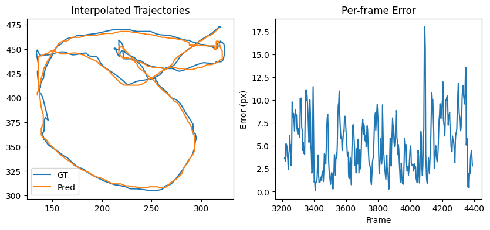

🐟 Aegear Tracking API Tutorial
This tutorial demonstrates how to benchmark the Aegear fish tracking system using its Python API. It walks you through:
- Downloading a test dataset and pre-trained models
- Running the tracker on a sample video
- Comparing predicted trajectories to ground truth
- Visualizing performance metrics and errors
The code here can be saved as a standalone script or adapted into your own projects.
Note that this is a breakdown and tutorial form of the tracking benchmark notebook from Aegear repository. Feel free to refer to the notebook if it is more convenient to follow and run the code in that form.
📦 Requirements
Ensure you have these installed:
torchnumpyscipymatplotlibtqdmaegear(your local module)
For detailed installation info, please see the installation page.
📁 Imports and Configuration
We start by importing all dependencies and defining configuration constants for dataset and model paths.
import os
import json
from urllib.request import urlretrieve
import numpy as np
from scipy.interpolate import Rbf
import matplotlib.pyplot as plt
import torch
from tqdm import tqdm
from aegear.tracker import FishTracker
from aegear.video import VideoClip
from aegear.gui.progress_reporter import ProgressReporter
import aegear.utils as utils
# Paths and URLs
DATASET_DIR = "../data/training"
VIDEO_DIR = "../data/video"
MODELS_DIR = "../models"
PUBLIC_BASE_URL = "https://storage.googleapis.com/aegear-training-data"
# Annotation metadata
ANNOTATIONS_INFO = {
"4_per_23": {
"file": "tracking_4_per_23_clean.json",
"annotation_url": f"{PUBLIC_BASE_URL}/tracking/tracking_4_per_23_clean.json",
"video_url": f"{PUBLIC_BASE_URL}/video/4_per_23.MOV"
},
}
# Tracker parameters
TESTING_PERCENTAGE = 0.5 # Evaluate on 50% of frames
TRACKING_THRESHOLD = 0.95
DETECTION_THRESHOLD = 0.95
TRACKING_MAX_SKIP = 3
⚡ Device Selection
Choose the best available compute device (MPS for Apple Silicon, CUDA for GPUs, or fallback to CPU).
def select_device():
"""Select MPS (Apple), CUDA, or CPU."""
if torch.backends.mps.is_available():
return torch.device("mps")
elif torch.cuda.is_available():
return torch.device("cuda")
return torch.device("cpu")
⬇️ Download Dataset and Models
Fetch the video and annotations if they don’t already exist locally.
def download_dataset():
"""
Download video and annotation files if not present locally.
Returns loaded annotations and video file path.
"""
os.makedirs(DATASET_DIR, exist_ok=True)
os.makedirs(VIDEO_DIR, exist_ok=True)
test_set = []
video_file = None
bar = tqdm(ANNOTATIONS_INFO.items(), desc="Downloading dataset")
for key, ann in ANNOTATIONS_INFO.items():
bar.set_postfix_str(key)
annotations_file = os.path.join(DATASET_DIR, ann["file"])
video_file = os.path.join(VIDEO_DIR, f"{key}.MOV")
if not os.path.exists(annotations_file):
print(f"Downloading annotations: {ann['annotation_url']}")
urlretrieve(ann["annotation_url"], annotations_file)
if not os.path.exists(video_file):
print(f"Downloading video: {ann['video_url']}")
urlretrieve(ann['video_url'], video_file)
with open(annotations_file, "r") as f:
test_set.append(json.load(f))
return test_set, video_file
📊 Progress Reporting with TQDM
We extend Aegear’s ProgressReporter to use tqdm for progress bars in the CLI or notebooks.
class TqdmProgressReporter(ProgressReporter):
"""Progress reporter using tqdm."""
def __init__(self, start_frame, end_frame):
self.total = end_frame - start_frame
self.pbar = tqdm(total=self.total, desc="Tracking Progress")
self.last_frame = start_frame
def update(self, current_frame):
self.pbar.update(current_frame - self.last_frame)
self.last_frame = current_frame
def still_running(self):
return True
def close(self):
self.pbar.close()
🚀 Run Tracking and Evaluate
This function initializes the tracker, processes a portion of the video, and compares predictions to ground truth.
def run_tracking_and_evaluate():
"""
Run tracking and evaluate performance.
"""
device = select_device()
print("Using device:", device)
test_set, video_file = download_dataset()
annotations = test_set[0]
video = VideoClip(video_file)
# Ground truth
gt_tracking = {item["frame_id"]: tuple(item["coordinates"]) for item in annotations["tracking"]}
# Prediction storage
pred_tracking = {}
def model_track_register(frame_id, centroid, confidence):
pred_tracking[frame_id] = (centroid, confidence)
# Load models
heatmap_model_path = str(utils.get_latest_model_path(MODELS_DIR, "model_efficient_unet"))
siamese_model_path = str(utils.get_latest_model_path(MODELS_DIR, "model_siamese"))
print("Using models:")
print(f" - UNet: {os.path.basename(heatmap_model_path)}")
print(f" - Siamese: {os.path.basename(siamese_model_path)}")
tracker = FishTracker(
heatmap_model_path=heatmap_model_path,
siamese_model_path=siamese_model_path,
tracking_threshold=TRACKING_THRESHOLD,
detection_threshold=DETECTION_THRESHOLD,
tracking_max_skip=TRACKING_MAX_SKIP,
)
# Define range
num_frames_tested = int(len(gt_tracking) * TESTING_PERCENTAGE)
tracking_start = min(gt_tracking.keys()) + num_frames_tested
tracking_end = tracking_start + num_frames_tested
reporter = TqdmProgressReporter(tracking_start, tracking_end)
tracker.run_tracking(
video,
tracking_start,
tracking_end,
model_track_register,
progress_reporter=reporter,
ui_update=None
)
# Evaluate
evaluate_tracking(gt_tracking, pred_tracking, video)
📈 Evaluate and Visualize Results
After tracking, we use RBF interpolation to align predicted and ground truth trajectories for error analysis.
def evaluate_tracking(gt_tracking, pred_tracking, video):
"""
Compare predicted and ground truth trajectories.
Plot error metrics and trajectories.
"""
gt_frames = np.array(sorted(gt_tracking.keys()))
gt_coords = np.array([gt_tracking[f] for f in gt_frames])
pred_frames = np.array(sorted(pred_tracking.keys()))
pred_coords = np.array([pred_tracking[f][0] for f in pred_frames])
# RBF interpolation
rbf_gt_x = Rbf(gt_frames, gt_coords[:, 0], function='multiquadric', epsilon=0.5)
rbf_gt_y = Rbf(gt_frames, gt_coords[:, 1], function='multiquadric', epsilon=0.5)
rbf_pred_x = Rbf(pred_frames, pred_coords[:, 0], function='multiquadric', epsilon=0.5)
rbf_pred_y = Rbf(pred_frames, pred_coords[:, 1], function='multiquadric', epsilon=0.5)
gt_interp = np.stack([rbf_gt_x(pred_frames), rbf_gt_y(pred_frames)], axis=1)
pred_interp = np.stack([rbf_pred_x(pred_frames), rbf_pred_y(pred_frames)], axis=1)
# Compute errors
errors = np.linalg.norm(gt_interp - pred_interp, axis=1)
print("\nTracking Error Statistics:")
print(f" Mean error: {np.nanmean(errors):.2f} px")
print(f" Median error: {np.nanmedian(errors):.2f} px")
print(f" Frames within 3px: {(errors < 3).sum() / len(errors):.2%}")
print(f" Frames within 5px: {(errors < 5).sum() / len(errors):.2%}")
print(f" Frames within 10px: {(errors < 10).sum() / len(errors):.2%}")
print(f" False hits (>20px): {(errors > 20).sum() / len(errors):.2%}")
# Plot
plt.figure(figsize=(10, 4))
plt.subplot(1, 2, 1)
plt.plot(gt_interp[:, 0], gt_interp[:, 1], label='Ground Truth')
plt.plot(pred_interp[:, 0], pred_interp[:, 1], label='Prediction')
plt.legend()
plt.title("Interpolated Trajectories")
plt.subplot(1, 2, 2)
plt.plot(pred_frames, errors)
plt.title("Per-frame Error")
plt.xlabel("Frame")
plt.ylabel("Error (px)")
plt.tight_layout()
plt.show()
📷 Example Output
Here’s an example of the output produced by the evaluate_tracking function:

- Left: Interpolated Ground Truth vs Predicted trajectories
- Right: Per-frame error over time
This visualization helps you quickly assess tracker performance.
▶️ Running the Tutorial
To run the full benchmark script:
if __name__ == "__main__":
run_tracking_and_evaluate()
This will download the dataset, run tracking, and print performance statistics.
📌 Summary
This tutorial showed how to use the Aegear API for:
- Running the fish tracker on real data
- Evaluating predictions against ground truth
- Visualizing performance with error metrics
You can now adapt this workflow into your own scripts or pipelines.